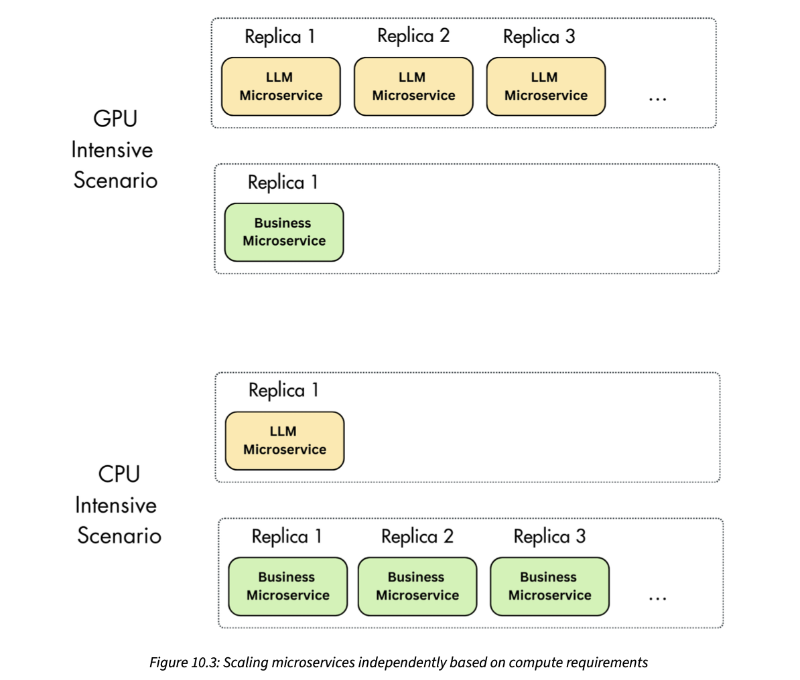
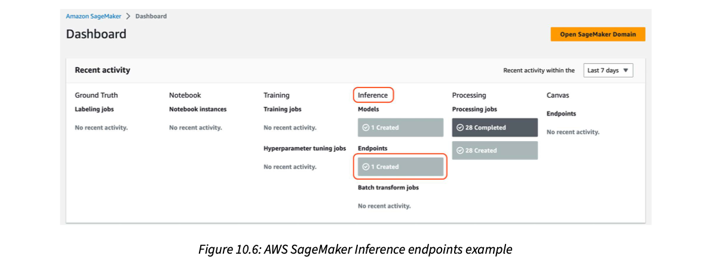
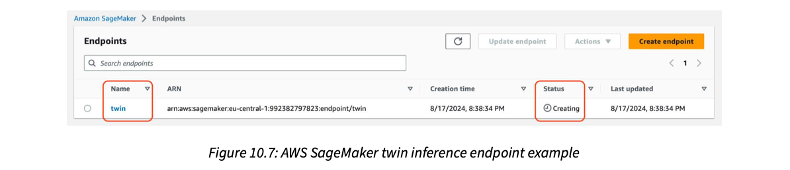
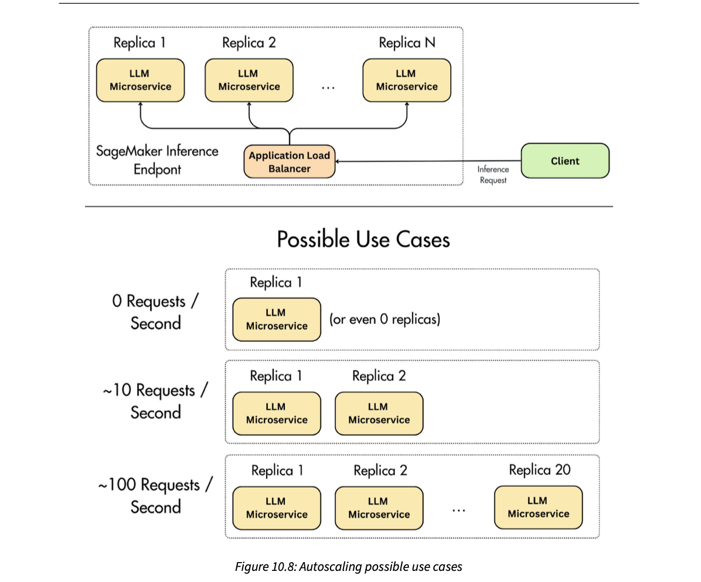

Putting the LLM Twin in front of users: how to deploy an inference pipeline
A model only earns money once users can call it, and LLMs make that hard because they need costly GPUs and fresh features at request time. The chapter first gives you the four things every deployment decision trades off: throughput, latency, data and infrastructure. With those, it compares the three ways to serve a model (online real-time, asynchronous and offline batch) and two ways to shape the service (monolith vs microservices). It then picks for the LLM Twin: online real-time, split into a cheap CPU business microservice (FastAPI, doing the RAG retrieval) and an expensive GPU LLM microservice (Hugging Face's TGI container on AWS SageMaker). It walks the Python that creates IAM roles, deploys the endpoint, calls it and exposes a /rag HTTP route. It closes with autoscaling: registering a scalable target, a target-tracking policy, min/max limits and cooldowns, so you pay for GPUs only when traffic needs them.
How the chapter fits together
read this firstRead the rows top to bottom. Each orange box is the decision the next row builds on. The whole chapter is one argument: know your latency, throughput, data and infrastructure needs; they pick the serving style and the service shape; then build it and let it scale with traffic.
Deployment is where the model finally creates value
Deploying the inference pipeline (the part of the system that answers user requests) is, in the authors' words, the stage of the ML life cycle where most business value is added: it is the moment your model becomes reachable by real users. Until then, a fine-tuned LLM is just files in a registry.
It is also hard, for two reasons the book names:
- Models need expensive computing power (GPUs) to run.
- They need access to up-to-date features at request time (for the LLM Twin: fresh chunks from the vector database for RAG, retrieval-augmented generation).
So you must design the deployment strategy carefully so that it meets the application's requirements: latency, throughput and cost. Because we are serving LLMs, the inference optimisations from Chapter 8 (for example quantization, storing weights in fewer bits) still apply. And to automate deployment we lean on MLOps practices such as a model registry, which versions models and shares them across the infrastructure.
The chapter's path:
- The criteria to weigh before any architecture decision: latency, throughput, data and infrastructure.
- The three deployment types: online real-time inference, asynchronous inference and offline batch transform.
- Monolithic vs microservices architecture for model serving, a choice that shapes scalability and maintainability.
- The concrete LLM Twin inference deployment strategy.
- An end-to-end tutorial: deploy the fine-tuned LLM to AWS SageMaker endpoints and build a FastAPI server as the users' single entry point.
- A short discussion of autoscaling and how to use it on SageMaker.
The six official topics: criteria for choosing deployment types · understanding inference deployment types · monolithic versus microservices in model serving · the LLM Twin's inference deployment strategy · deploying the LLM Twin service · autoscaling to handle spikes in usage.
A brilliant home cook (the trained model) is worth nothing to the neighbourhood until she opens a tiffin service. Opening it means deciding: cook to order while the customer waits, take orders and deliver later, or cook in bulk every morning and leave dabbas ready for pickup. Then: one big kitchen doing everything, or a separate stove for the expensive dish? Where it breaks: a cook can't be photocopied; a model can be replicated onto many machines in minutes, which is exactly what autoscaling exploits.
In the FTI (feature / training / inference) design from Chapter 1, the inference pipeline is the only one users touch. It consumes the other two pipelines' outputs: features from the feature store and weights from the model registry. That is why deployment decisions depend on both: where the features live (latency to fetch them) and how heavy the model is (what hardware runs it).
"You have a fine-tuned model. What do you think about before deploying it?" → "Four things: latency target, throughput (average and peak), the data in and out, and the infrastructure and cost. Those pick the serving style (sync, async or batch) and whether the GPU model sits in its own service. Then I add autoscaling and monitoring." This is the same checklist behind a realtime voice agent, where latency dominates every other choice.
- Ch.8 Inference optimization (quantization, batching) · Ch.9 RAG inference pipeline (the retrieval code we deploy here) · Ch.11 MLOps and LLMOps (prompt monitoring, CI/CD).
- Other books: AI Engineering Ch.9 Inference optimization · AI Engineering Ch.10 Architecture.
The four requirements present in every ML application
Step one of deploying any ML model is to understand four requirements that every ML application has: throughput, latency, data and infrastructure. You need to understand each one and how they interact. When you design the deployment architecture there is always a trade-off between the four, and it lands directly on the user's experience. The book's example question: should the deployment be optimised for low latency or for high throughput?
A chai stall at a railway station. Throughput is cups per minute; latency is how long one passenger waits; data is the order (plain chai vs a masala chai with ginger and extra sugar); infrastructure is the number of stoves and helpers. Boil a big pot for ten people and you sell more cups per minute, but the first passenger waits for the pot. Where it breaks: a passenger can see the queue and leave; an API client just times out.
The four are coupled. Bigger or more complex data raises latency; lower latency usually needs better hardware; batching raises throughput but can raise latency; and every infrastructure choice has a cost. You cannot max all four, so you choose which to protect for your use case.
"Latency or throughput: which do you optimise?" → "Depends on who waits. If a human waits on each request, like a chat or a voice turn, I set a latency budget first and maximise throughput inside it. If nobody waits, like nightly summarisation, I maximise throughput and cost efficiency and accept latency."
- Plates 03–05 detail each criterion · AI Engineering Ch.9 (TTFT, TPOT and throughput metrics in depth).
Requests per second vs milliseconds per request, and how batching flips their link
Throughput is the number of inference requests a system can process in a given time, usually measured in requests per second (RPS). It matters when you expect many requests: it makes sure the system handles them efficiently instead of becoming a bottleneck. High throughput often needs scalable, robust infrastructure, such as machines or clusters with several high-end GPUs.
Latency is the time a system takes to process one inference request, from when it is received until the result is returned. It is critical for real-time applications that need quick responses: live user interactions, fraud detection, anything that needs immediate feedback. Example from the book: the average latency of OpenAI's API is the average time from when a user sends a request until the result is available inside your application.
throughput = average number of requests the API processes and serves per second
Low-latency systems need optimised and often more costly infrastructure: faster processors, lower network latency, maybe edge computing (running the model physically closer to users) to shorten the distance data travels.
Without batching, lower latency means higher throughput when the service processes queries one after another successfully:
- 100 ms per request → 10 requests per second.
- 10 ms per request → 100 requests per second.
With batching it flips. Most ML applications pass several samples to the model at once. Then a higher latency can map to a higher throughput:
- 20 batched requests in 100 ms → latency 100 ms, throughput 200 requests per second.
- 60 requests in 200 ms → latency 200 ms, throughput 300 requests per second.
So even when batching at serving time, you must decide the minimum latency acceptable for a good user experience, and batch only within it.
Try it · batch size vs latency vs throughput
Modelled: batch time = fixed cost + batch size × per-sample cost. With the defaults (60 + 20×2 = 100 ms) you get the book's "20 in 100 ms = 200 RPS" point. Real GPUs behave roughly like this until memory or compute saturates.
| Mode | Requests handled together | Time | Latency | Throughput |
|---|---|---|---|---|
| one by one | 1 | 100 ms | 100 ms | 10 RPS |
| one by one, faster | 1 | 10 ms | 10 ms | 100 RPS |
| batched | 20 | 100 ms | 100 ms | 200 RPS |
| bigger batch | 60 | 200 ms | 200 ms | 300 RPS |
Throughput = requests in the batch ÷ batch time. The last two rows show the flip: doubling latency (100 → 200 ms) raised throughput by 50%.
An auto-rickshaw vs a shared jeep from the station. The auto leaves the moment you sit (low latency, 1 passenger per trip). The jeep waits until 10 people board (you wait longer), but it moves 10× the people per trip (high throughput). Where it breaks: the jeep waits for passengers; a GPU server with continuous batching (plate 18) can let new requests join mid-trip.
A GPU running an LLM is mostly limited by moving weights from memory, not by arithmetic. One request or twenty, it reads the same weights per step, so the extra requests are nearly free until compute or memory fills up. That is why batching boosts throughput so much while only slowly raising latency.
"How does batching affect latency and throughput?" → "Without batching, latency and throughput are inverses: 100 ms per request is 10 RPS. With batching you trade a bit of per-request latency for much higher throughput: 20 requests in 100 ms is 200 RPS. I pick the largest batch, or the batching window, that still meets the p95 latency budget." For an LLM gateway or voice agent, time-to-first-token is the latency users feel.
- Ch.8 (static, dynamic and continuous batching) · plate 05 (idle hardware raises cost per request) · AI Engineering Ch.9.
What goes in and what comes out shapes everything else
Data is everywhere in an ML system, but for model serving we mostly care about the model's input and output: their format, volume and complexity. Data is the foundation of inference. Its characteristics, like size and type, decide how the system must be configured and optimised to process it efficiently.
The type and size of the data directly affect latency and throughput: more complex or larger data takes longer to process. The book's contrast: a model that takes structured data and outputs a probability is a completely different design problem from an LLM that takes text (or even images) and outputs an array of characters.
| Tabular classifier (e.g. fraud score) | LLM (e.g. LLM Twin) | |
|---|---|---|
| Input | one row of ~50 numbers, a few hundred bytes | a prompt + retrieved context, thousands of tokens |
| Output | one number (probability) | a variable-length text, generated token by token |
| Compute per request | fixed, tiny, CPU is fine | grows with input and output length, needs a GPU |
| Latency profile | predictable, a few ms | seconds; depends on how much text is generated |
Table rows are an illustration (modelled), built from the book's one-line contrast.
A UPI payment check (a few fields, yes/no answer in milliseconds) vs writing a wedding speech (long input about the couple, long output, takes time). Same "request", wildly different work. Where it breaks: an LLM's output length is unknown in advance, so even two similar requests can take very different times.
LLM work splits into reading the prompt (all tokens at once) and generating the answer (one token per forward pass). Long contexts raise memory use (the KV cache) and the first-token delay; long answers raise total time linearly. So data size is a direct input to latency, throughput and how many requests fit on one GPU.
"Why is serving an LLM different from serving a classifier?" → "Inputs and outputs are variable-length text, so cost per request varies a lot, generation is sequential, and memory grows with context. That pushes you to GPUs, streaming, request batching and per-request token limits, where a classifier just needs a CPU behind a load balancer."
The hardware and software underneath, and the questions to ask before choosing
Infrastructure is the underlying hardware, software, networking and system architecture that supports deploying and running ML models. It provides the resources to deploy, scale and maintain them: compute, memory, storage, networking components and the software stack.
- For high throughput: scalable infrastructure that copes with large data volumes and high request rates, possibly via parallel processing, distributed systems and high-end GPUs.
- For low latency: infrastructure optimised to cut processing time, such as faster CPUs, GPUs or specialised hardware. Caveat: if you optimise for low latency while batching, you often sacrifice throughput, so the hardware is not used at full capacity. Fewer requests per second means idle compute, which raises the cost of each request. So picking the right machine for your requirements is critical for cost.
Infrastructure must also fit the data: storage that handles large datasets and fast retrieval for efficient access. Rule of thumb from the book: for offline training we mostly optimise throughput; for online inference we usually care about latency.
Before picking a deployment type, ask yourself:
- What are the throughput requirements? Decide from the required minimum, average and maximum statistics.
- How many requests must the system handle simultaneously? (1, 10, 1,000, 1 million…)
- What are the latency requirements? (1 millisecond, 10 milliseconds, 1 second…)
- How should the system scale? Look at CPU workload, number of requests, queue size, data size, or a mix.
- What are the cost requirements?
- What data do we work with: images, text or tabular?
- What is the size of the data? (100 MB, 1 GB, 10 GB)
Thinking hard about these directly decides the user experience, which ultimately separates a successful product from a failed one. Even a mind-blowing model loses if users wait too long or it often crashes: they switch to something less accurate that works reliably. The book cites a 2016 Google study: 53% of mobile visits are abandoned if a site takes longer than three seconds to load.
Try it · idle GPU = expensive requests
Modelled. Cost per 1,000 requests = hourly price ÷ requests served per hour × 1,000. Served = min(traffic, capacity); above capacity, requests queue or fail.
- Throughput: min 0.2, average 3, max 40 RPS (sale days).
- Simultaneous requests: ~40 at peak.
- Latency: first words within 1 second, full answer within 6 seconds.
- Scale on: number of requests per replica (GPU-bound model).
- Cost: GPU budget of one always-on machine, extra only during peaks.
- Data: text; 2–4k token prompts with retrieved context.
- Data size: knowledge base of ~2 GB in the vector DB.
→ Online real-time serving, streaming, autoscaling from 1 replica up. (Scenario and numbers are modelled.)
Renting a tempo for a shop's deliveries. Rent a big truck "to be fast" and it drives around half-empty most days: each parcel costs more. Rent a tiny one and on Diwali it can't keep up. Where it breaks: with the cloud you can rent and return trucks by the minute, which is what autoscaling does (plate 24).
You pay for a GPU by the hour whether it serves 1 request or 1,000. Cost per request is therefore hourly price ÷ requests served. Anything that leaves the GPU idle (small batches for latency, low traffic, CPU work running on the GPU box) multiplies the cost per request. Most of this chapter's later choices (microservices, autoscaling) are attacks on idle GPU time.
"What questions do you ask before designing a serving system?" → "Peak, average and minimum throughput; concurrency; latency budget; what metric to scale on; cost ceiling; data type; data size. Then I pick hardware so the GPU stays busy at the target latency, because idle GPUs are where the money goes."
Three ways to serve a model: now, later, or ahead of time
As Figure 10.1 shows, there are three fundamental deployment types for serving models:
- Online real-time inference: the client waits for the answer.
- Asynchronous inference: the request is queued; the answer comes later.
- Offline batch transform: predictions are computed in bulk and stored; the client reads them.
Picking one is a trade-off between latency, throughput and cost. You also have to consider how the data is accessed and the infrastructure you have. Three more criteria the book adds:
- How the user interacts with the model. Directly, like a chatbot? Or hidden inside your system, like a classifier that checks whether an input (or output) is safe?
- Freshness of predictions. If your use case can accept delayed predictions, offline batch is easier to build. Otherwise you need real-time serving, which demands more infrastructure.
- Traffic shape. Ask: "Will the application be used constantly, or will traffic spike and then flatten out?"
![Three panels. Online real-time inference: Client sends an inference request over HTTP to ML Service, which returns the result. Asynchronous inference: Client sends a request into a queue and gets an acknowledgement; ML Service pulls the request from the queue, writes the result to a queue or storage with an acknowledgement, and a notification listener tells the client, which then fetches the result. Offline batch transform: a manually run or scheduled job; ML Service reads N records from data storage, writes N results to data storage, and a notification listener tells the client results are computed; the client reads M results from storage.](figs/fig-10-1.png)
How to read this figure. Top left, online real-time: just two boxes and two arrows. The client sends an inference request (HTTP) and the same connection carries the result back. Top right, asynchronous: a queue (the beige bar) sits between client and ML service. The client gets "request acknowledged" immediately; the ML service picks requests off the queue when it can, puts results into a second queue or a storage (the dotted box with the database), and a notification listener (the speech bubble with a "1" badge) can tell the client the result is ready; otherwise the client polls. Bottom, offline batch transform: no client request starts it. A job, run manually or on a schedule, reads ×N records from data storage, writes ×N results back to storage, optionally notifies; the client later reads the ×M results it needs (M can be fewer than N, it takes only what it wants).
Try it · deployment-type chooser
Scoring weights are modelled from the trade-offs the book lists for each type (plates 07–09); they are a thinking aid, not a rule.
Three ways a sweet shop serves: real-time is the counter where jalebis are fried while you stand there; asynchronous is the token system on a festival day: you get a token, go away, and your number is called when ready; batch is boxes of mithai packed the night before and stacked on the shelf for anyone to pick up. Where it breaks: the shop can see who is in line; a server only sees a stream of anonymous requests.
The three differ in who holds the waiting. Real-time: the client's open connection waits, so the server must keep up with every request immediately. Async: a queue waits, so the server can work at its own pace. Batch: nothing waits, because the work was done before anyone asked. Moving the waiting from the user to a queue to "nowhere" trades freshness for cost and throughput.
"When would you use async inference instead of a synchronous API?" → "When jobs are long (minutes), when traffic spikes are much bigger than what I want to pay for, or when nobody watches the result live: document summarisation, keyword extraction, video models. Sync for chat and voice; batch when stale predictions are fine, like nightly recommendations."
- Plates 07, 08, 09 (each type) · Ch.1 (batch vs real-time architectures, Fig 1.2–1.3) · AI Engineering Ch.9 (online vs batch APIs).
The client asks over HTTP and waits for the answer
Real-time inference has a simple architecture: a server reachable through HTTP requests. The two popular options are a REST API or a gRPC server.
The flow: the client sends an HTTP request; the ML service processes it immediately and returns the result in the same response. This is synchronous: the client waits before moving on.
To make this efficient, the infrastructure needs:
- Low-latency, highly responsive ML services, often on fast, scalable servers.
- Load balancing to spread incoming traffic evenly.
- Autoscaling so the system handles varying loads.
- High availability so the service is up at all times.
Where you see it: chatbots and LLM APIs, where you expect the prediction right away. LLM services such as ChatGPT or Claude often use WebSockets to stream each token to the user as it is generated, making the interaction feel more responsive. Other examples: embedding or reranking models used for RAG, and online recommendation engines such as TikTok's.
Pros and cons: the direct client-server interaction is simple, which suits apps needing immediate responses (chatbots, real-time recommendations). But it can be challenging to scale, and it may leave resources underused during low-traffic periods.
Step through · one synchronous request
A request with an embedding of 1,024 floats: as JSON text each float looks like -0.0123456, about 10 characters plus a comma, so ~11 KB. As binary float32 it is 1,024 × 4 = 4 KB, and there is no text parsing on either side. That is the size and CPU gap the book means by "protobuf compiles to bytes". (Numbers modelled.)
Calling a customer-care line and staying on hold until someone answers: you can't do anything else, but you get your answer in the same call. REST is speaking in plain Hindi or English anyone understands; gRPC is two bank branches exchanging pre-agreed short codes: faster, but both sides need the codebook (the protobuf schema). Where it breaks: a phone call can't be split across agents mid-sentence; a token stream is just many small messages on one connection.
Because the client holds a connection open, server capacity has to match peak demand at every moment, or requests time out. That is why real-time systems pair load balancing with autoscaling, and why they waste money at night: capacity is sized for the peak but traffic isn't.
"REST or gRPC for a model server?" → "REST with JSON for public or partner-facing APIs, because every client can call it. gRPC with protobuf for internal service-to-service calls where I control both sides and want smaller payloads and lower latency. For token streaming to browsers I'd use server-sent events or WebSockets." In a realtime voice agent, internal hops between ASR, LLM and TTS services are where gRPC or streaming really pays off.
Take a token, go away, get told when it's ready
In asynchronous inference the client sends a request; the ML service acknowledges it and puts it in a queue. The client does not wait for the answer. The service processes the request later. This needs robust infrastructure that queues messages for the ML service to process later.
When results are ready, there are several ways to deliver them. Depending on the result's size, put it in another queue or in object storage dedicated to results. The client then either:
- polls: checks on a schedule whether new results exist, or
- uses a push strategy: a notification system tells the client when results are ready.
Benefits:
- More efficient use of resources. It doesn't have to process every request at the same time. You can set a maximum number of machines running in parallel, because requests wait in the queue until a machine is free.
- Handles spikes without timeouts. Book example: an e-shop normally gets 10 requests per second handled by two machines. A promotion pushes traffic to 100 requests per second. Instead of scaling the VMs (virtual machines) by 10, which adds drastic cost, requests queue up and the same two VMs process them at their own rhythm, without failures.
- Long jobs. If a job takes over five minutes, you don't want to block the client waiting for a response.
Trade-offs: higher latency, so it fits time-sensitive applications poorly, and more complexity in implementation and infrastructure. Depending on your design, it sits between online and offline.
It is a robust design when you don't care much about latency but want to cut costs heavily. Popular uses: extracting keywords from documents, summarising them with LLMs, running deep-fake models on videos. But if you carefully design the autoscaling to drain the queue at decent speed, you can use it for other cases too, such as online recommendations for e-commerce. In the end it comes down to how much compute you're willing to pay for to meet your application's expectations.
Try it · the e-shop spike: queue vs fixed workers
Modelled: each worker handles 5 RPS (so the book's 2 workers = 10 RPS baseline). Traffic is 10 RPS, then the spike, then 10 RPS again, over 300 s. The orange line is the queue length; the teal band shows when a synchronous client would have timed out.
Two VMs handle 10 RPS between them. A promotion sends 100 RPS for 30 seconds: 3,000 requests arrive, the VMs finish 300, so 2,700 wait in the queue. After the spike, traffic returns to 10 RPS, which in this model is exactly capacity, so the queue does not shrink. The book's "same two VMs process them in their rhythm" quietly assumes normal traffic sits below capacity, leaving spare time to drain the backlog. With a third VM (15 RPS), the backlog drains at 5 RPS: 2,700 ÷ 5 = 540 s, about 9 minutes. Nothing failed; some users waited minutes. That is the async bargain: no timeouts and no 10× bill, but latency grows with the backlog. (Timing is modelled; the 10 → 100 RPS and two-VM setup are the book's.)
A busy Aadhaar or passport seva kendra: you take a token, sit down or leave, and the display calls your number when a counter is free. The same four counters serve a Monday rush without turning anyone away; it just takes longer. SMS when ready = push; checking the display every few minutes = polling. Where it breaks: people in a queue get impatient and leave; messages in a queue wait forever unless you set a time-to-live.
The queue decouples arrival rate from service rate. As long as average arrivals are below capacity, any spike is absorbed as backlog and drained later. You size workers for the average (plus how fast you want backlogs cleared), not for the peak. Autoscaling on queue size (plate 05's "queue size" scaling metric) is the knob that turns async into near-real-time when you're willing to pay.
"Design an LLM summarisation service for 10,000 uploaded PDFs a day with bursty uploads." → "Async: the upload API puts a job on a queue and returns a job ID; GPU workers pull jobs, write summaries to object storage, and a webhook or the job-status endpoint tells the client. Workers autoscale on queue depth with a maximum to cap spend. No timeouts on bursts, and long documents don't block HTTP connections."
- Plate 09 (batch is the far end of this idea) · plate 24 (autoscaling) · AI Engineering Ch.10 (gateway and queueing patterns).
Compute everything ahead of time and let clients read the results
Batch transform processes large volumes of data at once, either on a schedule or triggered manually. The ML service pulls data from storage, processes it in a single operation, and stores the results in storage. That storage can be object storage like AWS S3 or a data warehouse like GCP BigQuery.
Unlike asynchronous inference, batch transform is optimised for high throughput with permissive latency. When real-time predictions are unnecessary, it can cut costs significantly, because processing data in big batches is the most economical method. It is also the simplest way to serve a model, so development is faster.
The client pulls results directly from storage, decoupled from the ML service. It never waits for the ML service to process its input, but it also can't ask for new results at any time. Think of the result storage as a large cache from which the client takes what it needs. For more responsiveness, the client can be notified when processing completes.
The downside: there is always a delay between when predictions are computed and when they are consumed, so not every application can use it. The book's contrast:
Batch transform shines when high throughput is needed: data analytics, periodic reporting. It is unsuitable for real-time apps due to high latency, and needs careful planning and scheduling to manage large datasets. That is why it's called an offline serving method.
Recap of the three: online real-time serves clients when they request a prediction; asynchronous sits between online and offline; offline batch transform processes large amounts of data, stores them, and clients consume them later.
| Online real-time | Asynchronous | Offline batch | |
|---|---|---|---|
| Who starts it | client request | client request | schedule / manual job |
| Client waits? | yes, same response | no; gets an ack | no; reads storage |
| Result delivered via | HTTP response / token stream | queue or object storage + poll or push | S3 / BigQuery, optional notification |
| Optimised for | latency | cost; spikes; long jobs | throughput; cost; simplicity |
| Freshness | fresh | fresh-ish (queue delay) | stale by design |
| Main weakness | hard to scale; idle in low traffic | higher latency; complex | always delayed; scheduling big data |
| Book's examples | chatbots, ChatGPT/Claude, embeddings, rerankers, TikTok recs | keyword extraction, LLM summaries, deep-fake on video, e-commerce recs | video-streaming recs, analytics, reports |
A streaming app has 2 million users. At 2 a.m. a job reads all users' watch histories from the warehouse, scores 50 candidate titles each (100 million predictions) in large GPU batches, and writes the top 20 per user to a key-value table. In the day, the app just looks up recs[user_id]: a cache read in a few milliseconds, no model involved. A user who watched three crime shows at noon still sees yesterday's picks until tomorrow's run. (Scenario modelled.)
The morning newspaper. Everything was decided and printed overnight; you just pick it up. Cheap per copy, read any time, but nothing after the press deadline is in it. Where it breaks: you can't "request" a different newspaper; you can only choose which page to read.
Batch jobs can fill the GPU completely (huge batches, no latency target) and then shut the machines off. No idle time, no load balancer, no autoscaling. The price is moved entirely into staleness: you precompute answers to questions before they are asked, so new inputs can't be served until the next run.
"Would you serve this model online or in batch?" → "If the inputs are known ahead of time and stale results are acceptable, batch: cheapest, simplest, highest throughput, and serving becomes a key-value lookup. If inputs only exist at request time, like a user's chat message, it has to be online or async." For LLMs, embedding a whole document corpus is the classic batch job; answering the user's question is online.
The second decision: the shape of the ML service itself
The three deployment types differed mainly in the interaction between client and ML service: the communication protocol, how responsive the service is, and how fresh predictions are. A separate question is the architecture of the ML service itself. It can be built as a monolithic server or as several microservices. This choice affects how the service is implemented, maintained and scaled.
![Two diagrams. Monolith: one Inference Pipeline box containing a single block 'LLM and Business Logic (pre and post processing)', receiving model weights from the model registry, stateful features from the vector DB and the client request, and sending data to Monitoring. Microservices: the Inference Pipeline box contains an LLM Microservice (receiving model weights) and a separate Business Microservice (pre and post processing) that receives stateful features and the client request; the two exchange requests and responses, and the business microservice sends data to Monitoring.](figs/fig-10-2.png)
How to read this figure. Both halves have the same outside world on the right: a Model Registry that provides model weights, a Vector DB that provides stateful features, and a Client sending requests, plus Monitoring on the left. Top (monolith): one yellow block, "LLM and Business Logic (pre & post processing)", takes all three inputs. Bottom (microservices): that block is split in two. The LLM Microservice alone receives the weights; the Business Microservice receives features and the client request, and the two talk through the paired dots (a request going up, a response coming back). Only the business service reports to monitoring. Nothing outside changed; only the inside was cut along the "GPU work vs everything else" line.
Toggle · same pipeline, two shapes
A dhaba where one cook does everything (chop, fry tandoori rotis, plate, bill) vs a restaurant with a tandoor station and a separate prep-and-billing counter. The tandoor (GPU) is the costly part; you don't want it cold while the cook writes bills. Where it breaks: in a kitchen, passing a plate across a counter is instant; between microservices it is a network call that can be slow or fail.
An LLM request has two very different kinds of work: GPU-bound generation and CPU/I-O-bound everything else (calling the vector DB, embedding the query, building prompts, logging). Put them in one process and you must buy hardware for both on every replica. Split them and each side gets the machine it needs.
"Would you put your model inside your API service?" → "For a small CPU model, yes, a monolith is simpler. For an LLM on GPUs, I separate a model-serving service (vLLM or TGI) from the application service, so GPU replicas scale on token load and the cheap API tier scales on request count." That split is exactly what an LLM gateway in front of model servers looks like.
Everything in one service: easy to start, hard to scale well
In a monolithic architecture, the LLM (or any ML model) and its business logic (preprocessing and post-processing steps) are bundled into a single service.
Pros: straightforward to implement at the start of a project, since everything is in one code base. That simplicity makes maintenance easy for small to medium projects, as updates happen inside one unified system.
Cons:
- Can't scale components independently. The LLM needs GPU power; the rest of the logic is CPU- and I/O-bound. The infrastructure has to be optimised for both, so resources are used inefficiently: the GPU sits idle while business logic runs, and vice versa. That inefficiency adds avoidable cost.
- Less flexibility. All components must share the same tech stack and runtime. You might want to run the LLM in Rust or C++, or compile it with ONNX or TensorRT, while keeping the business logic in Python. One system makes that split hard.
- Hard to split work across teams, often leading to bottlenecks and less agility.
Step through · where the GPU waits inside one monolith request
Each cell is 100 ms of one request's timeline on a GPU machine (modelled split: 400 ms retrieval and prompt work, 1,500 ms generation, 200 ms post-processing and logging).
Hiring a heart surgeon who also does the hospital's billing and reception because "it's one job". The surgeon is paid surgeon rates while filling forms. Where it breaks: a surgeon at least gets tired of forms; a GPU just quietly costs money.
Scaling a monolith means copying the whole service. If you need more retrieval capacity, you also buy another GPU; if you need another GPU, you also get another copy of all the CPU code. The unit of scaling is too coarse.
"What's wrong with a monolith for LLM serving?" → "Coupled scaling and coupled stacks. GPU idles during CPU work, every replica needs a GPU, and you can't run the model in an optimised runtime like TensorRT or a C++ server while the app stays in Python. Teams also step on each other."
Split the LLM from the business logic and scale each on its own
A microservices architecture breaks the inference pipeline into separate, independent services, typically an LLM service and a business-logic service. They talk over the network with protocols such as REST or gRPC.
The main advantage (Figure 10.3) is scaling each component independently. Since the LLM service may need more GPU resources than the business logic, it can scale horizontally (more copies) without touching the other components. This optimises resource use and cuts cost, because different machine types (GPU vs CPU) serve each service's needs.
Book example: suppose LLM inference takes longer, so you need more ML service replicas to meet demand. GPU VMs are expensive. By decoupling, you run only what's required on the GPU machine and don't block it with work that a much cheaper machine could do. So you scale horizontally as needed, at minimal cost.

How to read this figure. Two scenarios, each with two dashed "pools". GPU-intensive (top): many LLM microservice replicas (yellow, 1, 2, 3, …) but a single business microservice (green). CPU-intensive (bottom): the opposite, one LLM replica and many business replicas. The "…" means "as many as needed". The point is that the two pools grow and shrink independently, each on its own machine type.
Other advantages and costs:
- Each microservice can use the most suitable tech stack, so teams innovate and optimise independently.
- More complexity in deployment and maintenance: each service is deployed, monitored and maintained separately.
- More network communication between services adds latency and potential points of failure, so you need robust monitoring and resilience mechanisms.
The two-service split can be extended: for example one service for preprocessing, one for the model, another for post-processing. Using the four pillars (latency, throughput, data, infrastructure), you can get creative and design what fits your application.
Try it · monolith vs microservices cost for the same load
Modelled prices. In the monolith, each replica holds both parts, so you need max(GPU, CPU) replicas, all on GPU machines. In microservices, each pool is sized separately on its own machine type.
A wedding caterer: one tandoor team (expensive, specialised) and many serving staff (cheap). For a 2,000-guest wedding you add five more serving staff, not five more tandoors. On a rotis-heavy menu, you add tandoors instead. Where it breaks: waiters and cooks shout across the tent; services talk over a network, and each call can be slow or fail, so you need timeouts, retries and monitoring.
Splitting a system turns an in-process function call into a network call. You gain independent scaling, deployment and tech stacks; you pay with serialization, network latency, partial failures and more things to deploy and watch. The split is worth it when the parts have very different resource profiles, which is exactly the GPU-LLM vs CPU-app case.
"What do microservices cost you?" → "Operational complexity: separate deploys, monitoring, versioning; plus network latency and new failure modes between services. I'd mitigate with timeouts, retries with backoff, circuit breakers and tracing across services. For LLM serving the benefit, scaling GPUs independently, usually pays for that."
- Plate 14 (LLM Twin) · plate 24 (autoscaling the GPU pool) · AI Engineering Ch.10 (model gateways and routers).
Start simple, but write the monolith so it can be split later
The choice depends on the application's specific needs.
A common strategy: start with a monolith and split it into services as the project grows. To do that without a painful, costly transition, design the monolith with the split in mind:
- Even if all code runs on one machine, fully decouple the modules at the software level, so they can later move to separate services.
- In Python: implement the ML logic and business logic as two different modules that don't interact with each other. Glue them at a higher level, such as a service class or directly in the framework that exposes your app, like FastAPI.
- Better still: make them two different Python packages, glued the same way. This enforces the separation completely, but adds development complexity.
If you start with a monolith and plan to move to microservices, design for modularity. Otherwise, mixed logic will likely force a rewrite from scratch, which wastes lots of development time and resources.
In summary: monoliths give simplicity and easy maintenance at the cost of flexibility and scalability; microservices give agility to scale and innovate but need more sophisticated management and operations.
# a "split-ready" monolith (illustrative names, not the book's code)
# package 1: ml_core -> knows nothing about HTTP or retrieval
class TextGenerator:
def generate(self, prompt: str) -> str: ...
# package 2: twin_app -> knows nothing about GPUs or weights
class Retriever:
def fetch_context(self, question: str) -> str: ...
# glue layer: the only place both meet
class AnswerService:
def __init__(self, retriever, generator):
self.retriever, self.generator = retriever, generator
def answer(self, question: str) -> str:
ctx = self.retriever.fetch_context(question)
return self.generator.generate(f"{question}\n{ctx}")Today generator is an in-process object. Tomorrow you pass in a client with the same generate() method that calls a remote GPU service over HTTP; AnswerService doesn't change. The book uses exactly this trick with its Inference interface (plate 22).
Building a house with the plumbing in clearly separated, labelled pipes behind removable panels instead of embedded in concrete. Later, adding a separate bathroom block is a fitting job, not a demolition. Where it breaks: a too-early "modular" design can also be over-engineering; the book's advice is modular code, not premature services.
The hard part of moving to microservices is not deployment, it's untangling code that shares state and calls into each other everywhere. If the module boundary already matches the future network boundary (small, explicit interface; no shared globals), the split is mostly packaging.
"Monolith or microservices for a new AI product?" → "Start with a modular monolith if the model is small or traffic is low, keeping model code behind an interface. Split out the model server when it needs a GPU, a different runtime or independent scaling. With hosted LLM APIs, the model is already a separate service, so the app itself can stay a monolith for a long time."
Online real-time, split into a FastAPI business service and a SageMaker LLM service
With all the options understood, here are the concrete decisions for the LLM Twin.
Deployment type. The main goal is a chatbot that helps create content. Requests are processed sequentially, with a strong emphasis on low latency. So: online real-time inference.
Service shape. The ML service is split into a REST API server holding the business logic and an LLM microservice optimised to run the LLM. Reasons: the LLM needs a powerful machine, and you can optimise it with various engines for latency and memory, so a microservice makes the most sense. It also lets you adapt infrastructure to the LLM's size:
- An 8B-parameter model can run on one machine with an Nvidia A10G GPU after quantization.
- A 30B model would need an upgrade to an Nvidia A100.
- Either way you upgrade only the LLM microservice and leave the REST API untouched.
Most business logic here is RAG. So the retrieval and augmentation parts of RAG run inside the business microservice, including all the advanced RAG techniques from Chapter 9 (pre-retrieval, retrieval and post-retrieval optimisations). The LLM microservice is strictly optimised for the generation step. Finally, the business layer sends the prompt trace (user query, prompt, answer and other intermediate steps) to the prompt monitoring pipeline, detailed in Chapter 11.
Summary: an online real-time ML service with a microservice architecture that splits the LLM and business logic into two services.
![Architecture: a Business Microservice as a REST API contains Advanced RAG Logic (User Query, Vector DB Retrieval Clients, Context, Prompt Template) and Prompt and Answer boxes. Numbered steps: 1 client sends 'Write a post...'; 2 the query goes to the vector DB retrieval clients, fed by stateful features from the Vector DB; 3 context and query go into the prompt template; 4 the prompt is sent as a client request to the LLM Microservice (REST API, LLM, load and quantize LLM, deployed with LLM weights from the Model Registry); 5 the server response comes back as the answer; 6 prompt and answer go to the Prompt Monitoring Pipeline; 7 the generated post goes back to the client.](figs/fig-10-4.png)
How to read this figure. Follow the circled numbers. The big bottom box is the business microservice (a REST API); inside it, the grey "Advanced RAG Logic" area. ① The client sends "Write a post…". ② The user query goes to the vector DB retrieval clients, which read stateful features from the Vector DB (right). ③ The retrieved context and the query fill a prompt template. ④ The finished prompt is sent as a client request to the LLM microservice (top box): a REST API in front of an LLM that was loaded and quantized at deploy time ("Deploy LLM", fed with LLM weights from the model registry). ⑤ The server response becomes the answer. ⑥ Prompt and answer go to the prompt monitoring pipeline (top left). ⑦ The generated post goes back to the client. The thick vertical line on the right separates the inference side from the stores the other pipelines filled.
The inference pipeline's interface, defined by the FTI (feature/training/inference) architecture, needs two things:
- Real-time features for RAG, made by the feature pipeline and queried from the online feature store, concretely the Qdrant vector DB.
- A fine-tuned LLM made by the training pipeline, pulled from the model registry.
Step through · the seven steps of one LLM Twin request
The steps are the book's; the payloads are illustrative (modelled).
Tech stack.
| Piece | Tool | Why (as the book says) |
|---|---|---|
| Vector DB (online feature store) | Qdrant | Already used for RAG features since Chapter 4. |
| Model registry | Hugging Face | Shares the model publicly with everyone testing the book's code, so you can skip the training pipeline, which can cost up to 100 dollars. Shareability and accessibility are "some of the most beautiful aspects" of a registry. |
| Business microservice | FastAPI | Popular, easy to use, fast. |
| LLM microservice | AWS SageMaker + Hugging Face Deep Learning Containers (DLCs) | SageMaker integrates with HF's DLCs, an inference engine that optimises LLMs at serving time (plate 18). |
| Prompt monitoring | Comet | Covered in Chapter 11. |
A newspaper columnist's office. The assistant (business service) takes your request, pulls the columnist's old articles from the archive (retrieval), clips the relevant ones to a brief (prompt), and sends it upstairs to the columnist (LLM service), whose time is expensive. The assistant also files a copy of every brief and draft for the editor (monitoring). Where it breaks: a columnist can ask the assistant follow-up questions; here the LLM only sees what is in the prompt.
The split follows the resource profile: everything before and after generation is cheap CPU and I/O (embedding with a small model, calling Qdrant and OpenAI, formatting), while generation needs a GPU. Putting RAG in the business service also means you can change retrieval tricks without redeploying the 15–30-minute GPU endpoint.
"Walk me through your RAG serving architecture." → "A stateless API tier on CPU does retrieval, reranking and prompt building, then calls a separate GPU model server over HTTP and logs the whole trace (query, retrieved docs, prompt, answer, latency) to a monitoring tool. Model servers scale on GPU load, the API tier on requests. Swapping 8B for a 30B model only changes the model tier's instance type."
- Ch.9 (the
ContextRetrieverandrag()code) · Ch.4 (Qdrant features) · Ch.5 (TwinLlama-3.1-8B) · Ch.11 (Comet prompt monitoring) · AI Engineering Ch.6 RAG.
Endpoint, model, configuration, inference component
A SageMaker Inference deployment is made of four components (the chapter shows how to implement them):
InvokeEndpoint API in Python.Together they form a robust infrastructure for deploying and managing ML models in SageMaker: scalable, secure, efficient real-time predictions.
Other clouds have equivalents. On Azure you have Azure OpenAI instead of Bedrock and Azure ML instead of SageMaker. The list of ML deployment tools is endless and will keep changing: Hopsworks, Modal, Vertex AI, Seldon, BentoML and many more. What matters is understanding your use case's requirements and finding a tool that fits.
A food court. The endpoint is the counter window customers queue at. The model is a recipe book. The configuration is the kitchen equipment rented for the stall. The inference component is the arrangement that says "this recipe is cooked on these two stoves with this many cooks", and one counter can serve several recipes. Where it breaks: a food court counter has one menu board; an endpoint routes by component name, not by what the customer says.
Separating "what" (model) from "on what" (config) and "where it's reachable" (endpoint) lets you change one without rebuilding the others: new hardware under the same endpoint URL, or several models sharing one fleet of instances. Inference components are what make the per-model "copies" setting, and so autoscaling per model, possible (plate 25).
"What's a SageMaker endpoint vs an endpoint configuration?" → "The endpoint is the hosted HTTPS API. The endpoint configuration says what hardware backs it: instance type and count. The model is the artifact plus container image, and an inference component binds a model with its resource needs onto an endpoint so several models can share it. Clients call InvokeEndpoint."
Same model, very different pipelines
It sounds obvious ("training is for training, inference is for inference"), but the differences matter before you deploy.
| Training pipeline | Inference pipeline | |
|---|---|---|
| Data access | Offline storage, batch mode, optimised for throughput and data lineage. LLM Twin: ZenML artifacts access, version and track the data fed to the training loop in batches. | Online DB optimised for low latency. LLM Twin: Qdrant vector DB for RAG context. Focus moves from lineage and versioning to quick data access for a smooth user experience. |
| Output | Trained model weights, stored in the model registry. | Predictions served directly to the user. |
| Infrastructure | More powerful machines with as many GPUs as possible. Training batches data and holds all the gradients in memory for optimisation steps, so it is very compute-intensive. More compute and VRAM → larger batches (throughput) → shorter training and more experiments. | Usually less computation. Often a single sample or small batches, with no optimisation steps. |
Overlap: both pipelines share preprocessing and post-processing. You must apply the same functions and hyperparameters in both. Any mismatch causes training-serving skew: the model performs differently in inference than it did in training.
In training, the prompt template ends with ### Response:\n. In the inference service, a developer retypes it as ### Response: (no newline). Same weights, but the model now sees a token sequence it never saw in training, and answers get oddly formatted. Or: training lowercases and strips URLs from posts, inference doesn't. The fix is the book's rule: share one preprocessing module (and its settings) between both pipelines. (Examples modelled.)
Training is a cricket net session: hundreds of balls, bowling machines, coaches, lots of equipment, and it doesn't matter if one ball takes a minute. Inference is the match: one ball at a time, it must be played now. If you practise on a matting pitch and play on turf (different preprocessing), your form drops: that is training-serving skew. Where it breaks: a batsman adapts after a few overs; a model never adapts on its own.
Training needs memory for weights, gradients and optimizer states, roughly several times the model size, and wants big batches; inference only needs the weights plus activations and the KV cache. That is why the LLM Twin trains on big GPUs (Chapter 5) but serves an 8B model quantized on one A10G.
"What is training-serving skew and how do you prevent it?" → "When inputs at serving time are processed differently from training, so production quality drops even though offline metrics looked good. Prevent it by sharing the same preprocessing code and config (and for LLMs, the same chat template) across both pipelines, and by logging production inputs to compare distributions."
From design to running code: the plan
Now the architecture gets implemented. The LLM microservice is deployed with AWS SageMaker, the business microservice with FastAPI. Inside the business service, the RAG logic from Chapter 9 is glued to the fine-tuned LLM Twin, so you can finally test the inference pipeline end to end.
Why it matters: users can only interact with the model after this phase. If the serving architecture is badly designed or the infrastructure doesn't work, it doesn't matter how good the model is. If users can't interact with it properly, it has near-zero business value. Book example: the best code assistant on the market, but with high latency or crashing API calls, loses users to a weaker assistant that is faster and more stable.
The section shows how to:
- Deploy the fine-tuned LLM Twin model to AWS SageMaker (plates 18–21).
- Write an inference client to talk to the deployed model (plate 22).
- Write the business service in FastAPI (plate 23).
- Integrate the RAG logic with the fine-tuned LLM (plate 23).
- Implement autoscaling rules for the LLM microservice (plates 24–28).
A restaurant can have the best chef in town, but if the door is locked or the waiter takes an hour, customers go to the dhaba next door. Deployment is unlocking the door and hiring reliable waiters. Where it breaks: restaurants have loyal regulars; API users switch providers with a config change.
Users judge the whole system: latency, uptime, error rate. Model quality is just one input. That is why the book spends this section on plumbing (roles, configs, clients, HTTP) rather than on the model.
"What makes an ML product fail in production even with a good model?" → "Latency, availability and cost. If p95 latency is too high or the API errors under load, users leave regardless of quality. So I treat serving as a first-class engineering problem: SLOs, load tests, autoscaling and monitoring before launch."
- Ch.9 (code being glued) · AI Engineering Ch.10.
A ready-made Docker image with an optimised LLM server (TGI) inside
Goal: deploy the LLM Twin model, stored in Hugging Face's model registry, to Amazon SageMaker as an online real-time inference endpoint, using Hugging Face's specialised inference container, the Hugging Face LLM DLC.
DLCs (Deep Learning Containers) are specialised Docker images pre-loaded with deep-learning frameworks and libraries, including Hugging Face's transformers, datasets and tokenizers. They simplify training and deploying models by removing complex environment setup and optimisation. The Hugging Face Inference DLC in particular includes a fully integrated serving stack, which makes deployment much simpler and lowers the expertise needed to serve deep-learning models in production.
For serving, the DLC is powered by Text Generation Inference (TGI), Hugging Face's open-source engine for deploying and serving LLMs. It gives high-performance text generation using tensor parallelism and dynamic batching for the most popular open-source LLMs on Hugging Face, such as Mistral, Llama and Falcon. The DLC's most powerful features:
So the LLM Twin model runs inside DLC Docker images that listen for requests, optimise the LLM for inference and serve results in real time. The images are hosted on SageMaker behind inference endpoints reachable over HTTP. The implementation order: first deploy the LLM, then write a wrapper class to call the endpoint.
Step through · static batching vs continuous batching
Modelled: 4 batch slots; requests need different numbers of decode steps (A=3, B=8, C=2, D=5, E=4, F=3). Each cell is one decode step.
A DLC is a fully equipped cloud-kitchen unit you rent: stoves, exhaust, utensils already installed; you just bring the recipe (model ID). Continuous batching is a Mumbai local at a busy station: people get off and on at every stop, so the train is always full, instead of waiting for everyone to reach the last station before new passengers board. Where it breaks: the kitchen unit only fits certain recipes; TGI supports a list of popular model architectures, not every model.
Each TGI feature attacks one cost: flash-attention cuts memory traffic in attention; quantization shrinks weights to fit cheaper GPUs; tensor parallelism spreads a big model across GPUs; continuous batching keeps the GPU full while requests of different lengths come and go; safetensors loads weights quickly by memory-mapping them; SSE streaming cuts perceived latency because the first tokens arrive early.
"What does an LLM inference server like TGI or vLLM give you over a plain transformers script?" → "Continuous batching for throughput, optimised attention kernels, quantization, multi-GPU tensor parallelism, fast weight loading and token streaming over SSE, plus an HTTP API. A naive generate() loop serves one request at a time and wastes most of the GPU." Relevant to an LLM gateway: it's the backend the gateway routes to.
- vLLM (PagedAttention) and SGLang are widely used alternatives to TGI with the same core features; Hugging Face has since also integrated other backends into its inference containers. Check current docs before choosing.
- Ch.8 (flash-attention, continuous batching, tensor parallelism, bitsandbytes quantization, explained in depth) · AI Engineering Ch.9 · Hands-On LLMs Ch.12 (bitsandbytes 4-bit loading).
A narrow IAM user for deploying, an execution role for SageMaker itself
First, create the right AWS IAM (Identity and Access Management) users and roles to access and deploy SageMaker. IAM controls who can authenticate and what any actor can access. You create users (assigned to people) and roles (assigned to other actors in the infrastructure, such as EC2 VMs).
The deployment is automated with a few CLI commands. Before them, set AWS_ACCESS_KEY, AWS_SECRET_KEY and AWS_REGION in the .env file. For this step, the easiest is to use credentials of an admin role, because the next steps create a set of narrower IAM roles used for the rest of the chapter.
- Create a restricted IAM user that can create and delete only the resources needed for deployment: SageMaker, ECR (Elastic Container Registry) and S3. Run
poetry poe create-sagemaker-role. It writessagemaker_user_credentials.jsonwith a new access key and secret key. From then on, use these credentials for everything SageMaker, so only SageMaker-related resources can change. With an admin account you might accidentally modify other AWS resources, causing extra costs or altering other projects. A narrow role for your use case is good practice. Then copy the new keys intoAWS_ACCESS_KEYandAWS_SECRET_KEYin.env. (Code:llm_engineering/infrastructure/aws/roles/create_sagemaker_role.py.) - Create an IAM execution role, attached to the SageMaker deployment so it can access other AWS resources on your behalf. This is standard for cloud deployments: instead of authenticating every machine with your credentials, you attach a role that allows only what is needed. Here SageMaker gets access to S3, CloudWatch and ECR. Run
poetry poe create-sagemaker-execution-role. It writessagemaker_execution_role.jsoncontaining the role's ARN (Amazon Resource Name), the ID attached to any AWS resource to identify it across your cloud. Put that value intoAWS_ARN_ROLEin.env. (Code:.../roles/create_execution_role.py.)
If you hit issues, configure the AWS CLI with the same credentials as in .env and repeat. Once the IAM user and role are in .env, they load automatically into the settings Python object and are used in all following steps.
Step through · who uses which identity
An apartment society: the secretary's master key (admin) is used once to cut a key for the plumber that opens only the pump room (IAM user). The lift itself has a maintenance badge (execution role) that lets the lift company's system enter the lift shaft and logbook, nothing else. Where it breaks: a cut key works until someone takes it back; AWS roles hand out short-lived credentials automatically.
This is least privilege. A user has long-lived keys and is meant for a person or script; a role has no keys of its own and is assumed by a service, which gets temporary credentials. Giving SageMaker a role means the GPU machines never store your keys, and the narrow user limits damage if a deploy script misbehaves.
"IAM user vs IAM role?" → "A user is an identity with long-term credentials for a person or app. A role is an identity with permissions but no permanent credentials; services like EC2 or SageMaker assume it and get temporary credentials. For deployments I give the service an execution role with least privilege, and keep admin keys out of daily scripts."
create_endpoint → resource manager → deployment service → strategy
The SageMaker deployment is fully automated through Python classes. The aim of the section is to understand how SageMaker infrastructure is configured from Python, not to run each step by hand. The whole deployment runs with one CLI command, poe deploy-inference-endpoint, which performs every step in Figure 10.5 except creating the IAM identities (done in plate 19). Code lives in llm_engineering/infrastructure/aws/deploy.
![Deployment flow: a dotted box 'Create SageMaker AWS IAMs' holding IAM User and IAM Execution Role. Using the IAM user, call create_endpoint(). Step 1: create instances of ResourceManager (config_exists, endpoint_exists) and DeploymentService (deploy). Step 2: inject huggingface_deploy_config, model_resource_config, and the ARN of the execution role into SagemakerHuggingfaceStrategy, whose deploy() starts a pending deployment. Step 3: after a clock icon, deployment finalized: a SageMaker Inference Endpoint with an LLM behind an HTTP API.](figs/fig-10-5.png)
How to read this figure. Top left: the two IAM identities from plate 19. The IAM User is what you call create_endpoint() with (dashed arrow). #1: create_endpoint() creates a ResourceManager (with config_exists() and endpoint_exists()) and a DeploymentService (with deploy()). #2: everything is injected into SagemakerHuggingfaceStrategy: the two services, the huggingface_deploy_config (which LLM, how it generates), the model_resource_config (copies, GPUs, CPUs, memory) and the ARN of the execution role (dotted line from the IAM box). Its deploy() starts a pending deployment, the clock icon (15–30 minutes). #3: the deployment finalises into a SageMaker Inference Endpoint: an LLM behind an HTTP API.
The walk-through is top-down, starting from the main function. Below are shortened, renamed versions showing the same ideas.
① entry point (illustrative, names shortened)
from sagemaker.huggingface import get_huggingface_llm_image_uri
def deploy_twin(endpoint_kind=EndpointKind.INFERENCE_COMPONENT_BASED):
image_uri = get_huggingface_llm_image_uri("huggingface", version=None) # latest TGI DLC image
checker = AwsResourceChecker() # "ResourceManager" in the book
deployer = SagemakerDeployer(checker=checker) # "DeploymentService"
HfOnSagemaker(deployer).deploy( # "SagemakerHuggingfaceStrategy"
role_arn=cfg.ARN_ROLE, llm_image=image_uri, config=llm_env,
endpoint_name=cfg.ENDPOINT, endpoint_config_name=cfg.ENDPOINT_CONFIG,
gpu_instance_type=cfg.GPU_INSTANCE_TYPE, resources=resources,
endpoint_type=endpoint_kind)get_huggingface_llm_image_uri() returns the latest version of the Hugging Face LLM DLC image. That image URI, a resource manager and a deployment service are passed to the deployment strategy class.
② checking what already exists
import boto3
from botocore.exceptions import ClientError
class AwsResourceChecker:
def __init__(self):
self.sm = boto3.client("sagemaker", region_name=cfg.AWS_REGION,
aws_access_key_id=cfg.AWS_ACCESS_KEY,
aws_secret_access_key=cfg.AWS_SECRET_KEY)
def endpoint_config_exists(self, name: str) -> bool:
try:
self.sm.describe_endpoint_config(EndpointConfigName=name); return True
except ClientError:
return False
def endpoint_exists(self, name: str) -> bool:
try:
self.sm.describe_endpoint(EndpointName=name); return True
except self.sm.exceptions.ResourceNotFoundException:
return FalseThe constructor connects to SageMaker with boto3, the AWS SDK for Python. The two methods ask SageMaker to "describe" a resource; an error means it doesn't exist. The book's version logs each outcome.
③ the service that actually deploys
from sagemaker.huggingface import HuggingFaceModel
class SagemakerDeployer:
def __init__(self, checker):
self.sm = boto3.client("sagemaker", ...) # same connection as above
self.checker = checker
def deploy(self, role_arn, llm_image, config, endpoint_name, endpoint_config_name,
gpu_instance_type, resources=None, endpoint_type=EndpointKind.MODEL_BASED):
try:
if self.checker.endpoint_config_exists(endpoint_config_name):
log.info("config exists, reusing it")
else:
log.info("config missing")
self.prepare_and_deploy(role_arn, llm_image, config, endpoint_name,
update_endpoint=False, gpu_instance_type=gpu_instance_type,
resources=resources, endpoint_type=endpoint_type)
except Exception as err:
log.error(f"deploy failed: {err}"); raise
@staticmethod
def prepare_and_deploy(role_arn, llm_image, config, endpoint_name, update_endpoint,
gpu_instance_type, resources=None, endpoint_type=...):
model = HuggingFaceModel(role=role_arn, image_uri=llm_image, env=config,
transformers_version="4.6", pytorch_version="1.13",
py_version="py310")
model.deploy(instance_type=gpu_instance_type, initial_instance_count=1,
endpoint_name=endpoint_name, update_endpoint=update_endpoint,
resources=resources, tags=[{"Key": "task", "Value": "model_task"}],
endpoint_type=endpoint_type)deploy()is the heart of the class. It first checks whether the endpoint configuration exists, which avoids unnecessary redeployment if it is already set up, then callsprepare_and_deploy_model(). Errors are logged and re-raised.prepare_and_deploy_model()is a static method. It builds aHuggingFaceModel, SageMaker's class for Hugging Face models. Its key inputs: the role ARN (permissions), the DLC image URI, and the LLM configuration (which model to load from Hugging Face and its inference parameters, such as the maximum total tokens). The version strings are exactly as the book's code has them..deploy()then pushes it to SageMaker: instance type, number of instances (1 here), whether to update an existing endpoint or create a new one, optional resources for more complex (multi-model) deployments, and tags for tracking and categorisation.
④ the strategy that ties it together
class HfOnSagemaker(DeploymentStrategy):
def __init__(self, deployer):
self.deployer = deployer
def deploy(self, role_arn, llm_image, config, endpoint_name, endpoint_config_name,
gpu_instance_type, resources=None, endpoint_type=EndpointKind.MODEL_BASED):
log.info(f"replicas={cfg.COPIES} gpus={cfg.GPUS} instance={cfg.GPU_INSTANCE_TYPE}")
try:
self.deployer.deploy(role_arn=role_arn, llm_image=llm_image, config=config, ...)
log.info("deployment completed")
except Exception as err:
log.error(f"deployment error: {err}"); raiseThe strategy class is initialised only with a deployment service. Its deploy() parameters:
| Parameter | Meaning |
|---|---|
role_arn | The IAM role that gives the SageMaker deployment its permissions. |
llm_image | URI of the DLC Docker image. |
config | Dictionary of settings for the model environment (plate 21). |
endpoint_name, endpoint_config_name | Names of the SageMaker endpoint and its configuration. |
gpu_instance_type | Type of GPU EC2 instance to deploy on. |
resources | Optional resources dictionary, used for multi-model endpoint deployments. |
endpoint_type | MODEL_BASED or INFERENCE_COMPONENT: whether the endpoint includes an inference component. |
The method delegates the actual work to the deployment service. That delegation is the core of the strategy pattern: you can change how deployment is carried out (a different service or platform) without changing the high-level deployment logic.
Small inconsistency in the book: create_endpoint() defaults to INFERENCE_COMPONENT_BASED, but the call shown on pdf p413 passes EndpointType.MODEL_BASED.
Booking a wedding hall through a planner. The planner (strategy) doesn't build anything; it calls the venue manager (deployment service), who first checks the register (resource manager) to see if the hall is already booked under your name, and only then sets it up. Swap the venue manager for another city's and the planner's script stays the same. Where it breaks: a real planner improvises; this code just raises the exception and stops.
Under the hood, HuggingFaceModel.deploy() creates three SageMaker resources (a Model, an EndpointConfig, an Endpoint) and SageMaker then starts GPU instances, pulls the DLC image from ECR, and the container downloads the weights named in HF_MODEL_ID from the Hub and loads them. That startup chain is why it takes 15–30 minutes, and why checking for an existing config first saves time.
"How would you make model deployment reproducible?" → "Deploy from code, not the console: one command reads config from env/settings, checks what already exists, and creates or updates the model, endpoint config and endpoint idempotently. I'd wrap the platform behind a strategy interface so moving from SageMaker to Kubernetes changes one class." Same idea as keeping provider adapters behind one interface in an LLM gateway.
How many copies, GPUs, CPUs and how much RAM; which model and how it generates
Resource configuration. Used when setting up multi-endpoint configurations with several replicas that serve clients while meeting the app's latency and throughput needs. A ResourceRequirements object (from sagemaker.compute_resource_requirements) is created with a dictionary of four parameters:
from sagemaker.compute_resource_requirements.resource_requirements import ResourceRequirements
resources = ResourceRequirements(requests={
"copies": cfg.COPIES, # replicas of the model
"num_accelerators": cfg.GPUS, # GPUs
"num_cpus": cfg.CPUS, # CPU cores
"memory": 5 * 1024, # minimum RAM in MB
})copies: how many instances or replicas of the model to deploy. More replicas can reduce latency and increase throughput.num_accelerators: number of GPUs. LLMs are compute-heavy, so multiple GPUs are typically needed to speed up inference.num_cpus: CPU cores. They affect pre-processing, post-processing and other less GPU-dependent but still essential tasks.memory: the minimum RAM required, so the model can load and run without running out of memory.
The right values depend on the LLM's size, the complexity of its tasks and the expected load. The book's suggestion: after deploying, change them and watch how the LLM microservice's performance changes.
LLM engine configuration. Environment variables passed to the TGI container:
llm_env = {
"HF_MODEL_ID": cfg.HF_MODEL_ID, # e.g. mlabonne/TwinLlama-3.1-8B-13
"SM_NUM_GPUS": json.dumps(cfg.SM_NUM_GPUS), # GPUs per replica
"MAX_INPUT_LENGTH": json.dumps(cfg.MAX_INPUT_LENGTH), # max prompt length
"MAX_TOTAL_TOKENS": json.dumps(cfg.MAX_TOTAL_TOKENS), # prompt + generation
"MAX_BATCH_TOTAL_TOKENS": json.dumps(cfg.MAX_BATCH_TOTAL_TOKENS),
"HUGGING_FACE_HUB_TOKEN": cfg.HF_TOKEN,
"MAX_BATCH_PREFILL_TOKENS": "10000",
"HF_MODEL_QUANTIZE": "bitsandbytes",
}HF_MODEL_ID: which Hugging Face model to deploy. In the settings it ismlabonne/TwinLlama-3.1-8B-13, the custom LLM Twin model.SM_NUM_GPUS: GPUs per model replica, crucial to fit the model into GPU VRAM.HUGGING_FACE_HUB_TOKEN: access to the Hub to download the model.HF_MODEL_QUANTIZE: which quantization technique (here bitsandbytes).- The rest control token generation: max input length, max total tokens (input + generation), max tokens per batch and per prefill batch.
With these two configurations you fully control the infrastructure, which LLM to use and how it behaves. Start the deployment with create_endpoint(endpoint_type=EndpointType.MODEL_BASED), or the wrapper poetry poe deploy-inference-endpoint.
That's all you need. The hardest part is finding the right configuration for your needs while keeping infrastructure cost down. Deployment takes 15–30 minutes on AWS. You can change any value in .env and redeploy without touching code. Defaults use a single GPU instance of type ml.g5.xlarge. For more replicas, tweak GPUS and SM_NUM_GPUS, or change the instance type with GPU_INSTANCE_TYPE.
Before deploying, make sure you generated the user role (poetry poe create-sagemaker-role) and execution role (poetry poe create-sagemaker-execution-role) and updated the AWS_* variables in .env; the repository README has details.
Try it · does this config fit the GPU? (rough)
Modelled rule of thumb: weights = params × bytes; add ~20% for activations, KV cache and runtime. GPU sizes are public specs (A10G 24 GB, A100 40/80 GB, V100 16 GB), not from the book. The book only says: 8B fits one A10G after quantization; 30B needs an A100.
Checking it in the console. In the SageMaker dashboard's left panel click SageMaker dashboard, then in the Inference column click Endpoints (Figure 10.6).

How to read this figure. The SageMaker dashboard's "Recent activity" panel, last 7 days. The red circles mark the Inference column, where Models: 1 Created and Endpoints: 1 Created show the deployment produced one model and one endpoint. "Batch transform jobs: no recent activity" is a reminder that SageMaker also offers the offline batch type (plate 09); this chapter only uses real-time endpoints. The 28 processing jobs are not part of this chapter's deployment.
After clicking Endpoints, the twin endpoint shows as Creating or Created (Figure 10.7). Clicking it shows the endpoint's logs in CloudWatch and lets you monitor CPU, memory, disk and GPU utilisation. It is also an excellent single place to watch all HTTP errors such as 4XX and 5XX.

How to read this figure. The Endpoints list. One row: Name = twin (the value of SAGEMAKER_ENDPOINT_INFERENCE), its ARN (region eu-central-1, then endpoint/twin), creation time, and Status = Creating with a clock icon: the 15–30-minute wait. Buttons at the top (Update endpoint, Actions, Create endpoint) are the manual alternatives to what the code does.
Say MAX_INPUT_LENGTH = 2,048 and MAX_TOTAL_TOKENS = 4,096. A prompt with 1,500 tokens of RAG context can generate at most 4,096 − 1,500 = 2,596 new tokens; a 2,500-token prompt is rejected outright. If MAX_BATCH_TOTAL_TOKENS = 16,384, the server fits at most four such full-length requests in one batch at a time. (Values modelled; the book reads them from settings.)
Booking a wedding venue: the resource config is "how many halls, how many cooks, how many chairs, minimum kitchen space"; the engine config is "which menu, maximum plates per guest, how many guests per sitting". Where it breaks: venues let you add chairs on the day; changing these values means a redeploy.
VRAM holds two things: the weights (fixed, set by model size and quantization) and the KV cache (grows with tokens in flight). The token limits cap the KV cache so requests never push the GPU out of memory; whatever VRAM is left after weights decides how many tokens can be batched, which is the throughput you get.
"How do you size a GPU for an LLM endpoint?" → "Weights first: parameters × bytes per parameter after quantization. Then headroom for KV cache, which depends on max context and batch tokens. If it doesn't fit, quantize or shard with tensor parallelism across GPUs. Then I load-test and tune max batch tokens for the latency target." The book's anchor: an 8B model quantized fits one A10G (ml.g5.xlarge).
Two classes: one talks to SageMaker, one builds the prompt and runs it
With the LLM service deployed, two classes help you prepare the prompt, call the endpoint over HTTP and decode the result into something the client can use. Code: llm_engineering/model/inference. Usage is two lines: build an LLMInferenceSagemakerEndpoint with the endpoint name, then InferenceExecutor(llm, text).execute() returns the answer.
① the SageMaker client class (illustrative, shortened)
class SagemakerLLM(Inference): # "LLMInferenceSagemakerEndpoint"
def __init__(self, endpoint_name, default_payload=None, inference_component_name=None):
super().__init__()
self.rt = boto3.client("sagemaker-runtime", region_name=cfg.AWS_REGION, ...)
self.endpoint_name = endpoint_name
self.payload = default_payload or self._default_payload()
self.component = inference_component_name
def _default_payload(self):
return {"inputs": "",
"parameters": {"max_new_tokens": cfg.MAX_NEW_TOKENS,
"top_p": cfg.TOP_P, "temperature": cfg.TEMPERATURE,
"return_full_text": False}}
def set_payload(self, inputs, parameters=None):
self.payload["inputs"] = inputs
if parameters:
self.payload["parameters"].update(parameters)
def inference(self):
args = {"EndpointName": self.endpoint_name, "ContentType": "application/json",
"Body": json.dumps(self.payload)}
if self.component not in ["None", None]:
args["InferenceComponentName"] = self.component
resp = self.rt.invoke_endpoint(**args)
return json.loads(resp["Body"].read().decode("utf8"))- Constructor: a
sagemaker-runtimeboto3 client (the runtime API, not the management API used for deploying), the endpoint name that identifies which endpoint to call, the payload (given, or a default), and an optional inference component name. _default_payload(): the default request shape.inputsis the prompt;parametersholds max new tokens, top_p (the sampling strategy), temperature (randomness) andreturn_full_text: False(return only the new text, not the prompt echoed back). Values come from the app's settings, so all inference calls behave consistently.set_payload(): replacesinputswith the new text and merges in any parameter overrides.inference(): packages payload and details into the format SageMaker expects, adds the inference component name if one is set (finer control over which model on the endpoint answers), callsinvoke_endpoint(), reads and decodes the body, and returns the JSON. Failures are logged and re-raised.
② the executor: prompt + parameters + call
class PromptRunner: # "InferenceExecutor"
DEFAULT_TEMPLATE = ("You write content for the user. Use the context below as your main source.\n"
"Request: {query}\nContext: {context}\n") # our wording
def __init__(self, llm: Inference, query: str, context: str | None = None, prompt: str | None = None):
self.llm, self.query = llm, query
self.context = context or ""
self.prompt = prompt or self.DEFAULT_TEMPLATE
def execute(self) -> str:
self.llm.set_payload(
inputs=self.prompt.format(query=self.query, context=self.context),
parameters={"max_new_tokens": cfg.MAX_NEW_TOKENS,
"repetition_penalty": 1.1,
"temperature": cfg.TEMPERATURE})
return self.llm.inference()[0]["generated_text"]- The constructor takes
llm: any object implementing theInferenceinterface, such as the SageMaker class. It also takes the user'squery, an optionalcontext(for RAG), and an optional custom prompt template. Without one, it uses a generic template not specialised to any LLM: a content-creator instruction with slots for the user query and the context. execute()fills the template, sets parameters (max new tokens, a repetition penalty of 1.1 to discourage repeating text, and temperature), callsinference(), waits, and returns thegenerated_textof the first result.- Because the call goes through the
Inferenceinterface, you can inject other inference strategies (another provider, a local model, a mock) without modifying other code.
Test it with poetry run python -m llm_engineering.model.inference.test, or the wrapper poetry poe test-sagemaker-endpoint.
Try it · build the request body that reaches SageMaker
The structure (inputs + parameters, InferenceComponentName only when set) follows the book's classes; the template wording, context and numbers are our own (modelled).
Sending a courier: the executor writes the letter in a fixed format (template), the client class puts it in the right envelope with the right address label (endpoint name, content type) and hands it to the courier company (boto3). Change courier companies and only the envelope person changes. Where it breaks: a courier delivers eventually; this call blocks until SageMaker answers or times out.
invoke_endpoint is a signed HTTPS POST to the SageMaker runtime. SageMaker routes it to one of the endpoint's instances (or to the named inference component), where the TGI container receives the JSON, runs generation with those parameters, and returns a JSON list. return_full_text: False matters: without it, you'd get your whole prompt (with the RAG context) echoed back in the answer.
"How do you keep your app independent of the LLM provider?" → "Put every model behind one small interface, set_payload plus inference or just generate(prompt, params), and inject the implementation. The prompt-building code never knows if it's SageMaker, OpenAI or a local model. It also makes testing easy with a fake." This is the core of an LLM gateway's provider adapters.
- Plate 13 (decoupling for a future split) · Ch.9 (
call_llm_service) · Hands-On LLMs Ch.7 and AI Engineering Ch.5 (temperature, top-p, repetition penalty).
A small POST /rag endpoint that glues retrieval to the remote LLM
The business microservice sends HTTP requests to the LLM microservice and calls the RAG retrieval module from Chapter 9. A simple FastAPI app is enough to prove the deployment strategy.
from fastapi import FastAPI, HTTPException
from pydantic import BaseModel
api = FastAPI()
class AskIn(BaseModel): # "QueryRequest"
query: str
class AskOut(BaseModel): # "QueryResponse"
answer: str
def ask_llm(query: str, context: str | None) -> str: # "call_llm_service"
llm = SagemakerLLM(endpoint_name=cfg.ENDPOINT, inference_component_name=None)
return PromptRunner(llm, query, context).execute()
def answer_with_rag(query: str) -> str: # "rag"
docs = ContextRetriever(mock=False).search(query, k=3 * 3)
context = EmbeddedChunk.to_context(docs)
return ask_llm(query, context)
@api.post("/rag", response_model=AskOut)
async def rag_route(body: AskIn):
try:
return {"answer": answer_with_rag(body.query)}
except Exception as err:
raise HTTPException(status_code=500, detail=str(err)) from err- FastAPI instance plus two Pydantic
BaseModelclasses define the request (query: str) and response (answer: str) shapes; FastAPI validates them. call_llm_service()(from Chapter 9, which couldn't run then because the model wasn't deployed yet) wraps the call to the SageMaker LLM microservice using the two classes from plate 22.rag()holds all the RAG business logic. It is CPU- and I/O-bound only:ContextRetrievermakes API calls to OpenAI and Qdrant (network I/O) and runs the embedding model on the CPU. Retrieval asks fork = 3 × 3documents. Because LLM inference moved to another microservice,call_llm_service()is only network I/O. So the whole function is light, the heavy compute happens elsewhere, and the FastAPI server can run on a light, cheap machine without a GPU at low latency.rag_endpoint()exposes it as a POST route at/ragvia a decorator, expecting aQueryRequest. On success it returns the answer wrapped in aQueryResponse; on an exception it raises an HTTP 500 with the details.
The modular design, with custom classes like ContextRetriever, InferenceExecutor and LLMInferenceSagemakerEndpoint, makes it easy to customise and scale.
Running and calling it. Start with uvicorn, the go-to server for FastAPI: uvicorn tools.ml_service:app --host 0.0.0.0 --port 8000 --reload, or poetry poe run-inference-ml-service. Call it with curl: curl -X POST 'http://127.0.0.1:8000/rag' -H 'Content-Type: application/json' -d '{"query": "your_query"}', or poetry poe call-inference-ml-service (which sends a real example query).
Going beyond local. This FastAPI server runs only locally. The next step would be deploying it to AWS EKS (Elastic Kubernetes Service), AWS's managed Kubernetes, or to AWS ECS (Elastic Container Service), which is similar but uses AWS's own orchestration instead of Kubernetes. This isn't LLM-specific, so the book skips it, but outlines the steps: create an EKS/ECS cluster from the dashboard or with an IaC (infrastructure-as-code) tool such as Terraform; Dockerize the FastAPI code; push the image to AWS ECR; create an ECS/EKS deployment from that image. Chapter 11 walks through a similar example (deploying ZenML pipelines to AWS).
poetry poe delete-inference-endpoint, then check the SageMaker dashboard yourself to confirm.Try it · fake POST /rag (runs in your browser)
Press Send.
A JavaScript imitation of the request path with modelled timings (Qdrant ~40 ms, OpenAI query expansion ~300 ms, CPU embedding ~30 ms, SageMaker ~2,500 ms). No network calls are made.
A travel agent's front desk: it takes your request on a printed form (Pydantic model), looks things up in its files and calls the airline (CPU and phone work), then phones the expensive specialist (the GPU service) for the final itinerary. If the specialist's line is dead, the desk tells you "sorry, try later" (HTTP 500) instead of hanging forever. Where it breaks: a good agent would retry or call another airline; the book's code just returns 500 (no retry, fallback or timeout shown).
The route is declared async but calls blocking functions (boto3 and the retriever are synchronous). FastAPI runs the async route on its event loop, so a slow blocking call there would stall other requests on the same worker. That's fine for a local demo; production setups either declare the route as plain def (FastAPI then runs it in a thread pool) or use async clients. (Beyond the book.)
"Your RAG API is slow. Where do you look?" → "Break the latency down per hop: query rewriting call, embedding, vector search, LLM call, plus serialization. Usually the LLM dominates, so streaming, smaller max tokens or a faster model help most; then parallelise retrieval calls and cache embeddings. And check I'm not running blocking I/O inside async handlers." For voice agents this per-hop budget is the whole game.
- For production, add request timeouts on
invoke_endpoint, retries with backoff for throttling, and streaming responses (SageMaker has aninvoke_endpoint_with_response_streamAPI) so users see tokens early.
Fixed replicas waste GPUs at night and choke during spikes
So far the SageMaker LLM microservice uses a static number of replicas: the same number of instances is up all the time, whatever the traffic. Two problems:
- Wasted money. GPU machines are expensive, so you lose a lot during quiet periods when most replicas are idle.
- Poor performance in spikes. If traffic suddenly jumps, the server can't handle the requests. That hurts user experience exactly when it matters: spikes bring in most of your new users, and if their first impression is bad, they are much less likely to come back.
Earlier we configured the multi-endpoint service with ResourceRequirements. Suppose we request four copies with this compute each:
ResourceRequirements(requests={
"copies": 4, # replicas
"num_accelerators": 4, # GPUs
"num_cpus": 8, # CPU cores
"memory": 5 * 1024, # minimum RAM in MB (required)
})With this, four replicas always serve clients, regardless of idle time or spikes. The fix is an autoscaling strategy that scales replicas up and down dynamically based on metrics such as the number of requests.
Figure 10.8 shows a standard setup where SageMaker Inference endpoints scale in (fewer replicas) and out (more replicas) with the number of requests. The book's fictional numbers, to be adapted to your use case:
- No traffic: keep one replica online so the server stays responsive to new requests, or even scale to zero if latency isn't critical.
- ~10 requests per second: keep two replicas.
- ~100 requests per second: the autoscaler spins up 20 replicas.

How to read this figure. Top: the client never talks to a replica directly. Its inference request goes to an Application Load Balancer inside the SageMaker Inference Endpoint, which fans out to Replica 1, 2 … N of the LLM microservice. Bottom, "Possible Use Cases": three traffic levels and the replica count for each: 0 RPS → 1 replica (or even 0), ~10 RPS → 2, ~100 RPS → 20. The client's view (top) is identical in all three cases; only N changes.
Without the cloud-networking details: in multi-replica systems an Application Load Balancer (ALB) or another load balancer sits between client and replicas. All requests go to the ALB first, which routes each one to a replica. The simplest routing strategy is round robin: send requests to each replica in turn (first request to replica 1, second to replica 2, and so on). Whatever the number of replicas, the client always calls the load balancer, the entry point into the cluster. So adding or removing replicas doesn't change the client-server communication.
Try it · round-robin load balancer
Change the replica count mid-way: the client keeps calling the same ALB address. Counts are per replica since the last reset.
To implement autoscaling on a SageMaker Inference endpoint, SageMaker provides Application Auto Scaling, which scales resources dynamically based on predefined policies. Two foundational steps: registering a scalable target and creating a scaling policy (plates 25–26).
Say one replica handles 5 RPS (modelled), costs $1.50/hour, and traffic is 0 RPS for 8 hours, ~10 RPS for 14 hours and ~100 RPS for 2 hours. Static 4 replicas: 4 × 24 × $1.50 = $144/day, and during the 2-hour spike it can serve only 20 of 100 RPS. Autoscaled to the book's 1 / 2 / 20 pattern: (1 × 8 + 2 × 14 + 20 × 2) × $1.50 = 76 replica-hours = $114/day, and the spike is fully served. Cheaper and better. (All prices and capacities modelled.)
A toll plaza on the highway. At 3 a.m. one booth is open; on a festival weekend, all twenty are. Drivers always drive to "the toll plaza", never to booth 7; a marshal (load balancer) waves each car to the next free booth. Where it breaks: a booth opens in a minute; a new GPU replica takes minutes to start and load the model, so scaling must react early.
The load balancer gives you a stable address and hides the replica set behind it, so replicas become disposable. That is what lets an autoscaler add and remove them freely. Round robin is the simplest policy; it assumes requests are similar in cost, which is not quite true for LLMs (long vs short generations), so smarter balancers route by least outstanding requests.
"Why autoscale an LLM endpoint, and what's tricky about it?" → "Fixed capacity either wastes GPU money in quiet hours or fails during spikes, which is when new users arrive. The tricky parts for LLMs: replicas take minutes to start (weights must load), so scale-out has to be early; per-request cost varies with token count, so request count is an imperfect metric; and scale-to-zero means a cold start for the next user." For a voice agent, I'd keep a warm minimum.
Tell AWS what can scale and within which limits
Step one of autoscaling is to register a scalable target with AWS's Application Auto Scaling. Think of it as telling AWS which resource you intend to scale and the boundaries within which scaling may happen. This step does not say how or when scaling should happen.
For SageMaker Inference components, you define:
| Field | Meaning |
|---|---|
| Resource ID | Unique identifier of the resource to scale, typically including the name of the SageMaker Inference component. |
| Service namespace | The AWS service the resource belongs to: here, SageMaker. |
| Scalable dimension | What gets scaled, such as the desired number of copies. |
| MinCapacity and MaxCapacity | The boundaries of the autoscaling strategy: minimum and maximum number of replicas. |
Registering the target prepares the inference component for future scaling actions without deciding when or how they happen.
Try it · build the registration call
Beyond the book: the book describes the fields but shows no code. This is how the same fields look in boto3's application-autoscaling client (check the AWS tutorial the book links for current values).
Telling the railway "train 12951 may run with between 1 and 20 coaches". That's the registration. It says nothing about when to add coaches; that's a separate rule. Where it breaks: coaches can't be added mid-journey; replicas can be added any time.
Application Auto Scaling is a general AWS service (it scales DynamoDB, ECS and more). The namespace + resource ID + dimension triple tells it exactly which number it is allowed to change on which resource. Separating "what and how far" (target) from "when" (policy) lets you attach several policies to one target.
"What do you need to autoscale a SageMaker endpoint?" → "Two things. Register a scalable target: the resource (inference component), namespace (SageMaker), dimension (copy count) and min/max. Then attach a scaling policy, typically target tracking on invocations per copy, with cooldowns."
Target tracking: a thermostat for replicas
Once the target is registered, define how scaling happens with a scaling policy: specific rules that trigger scaling events. You define metrics (what to monitor) and thresholds (when to emit scaling events).
For our SageMaker Inference component, the policy might include:
- Policy type: for example
TargetTrackingScaling, which adjusts capacity to keep a chosen metric at a specific target value. - Target tracking configuration: the metric to monitor (such as
SageMakerInferenceComponentInvocationsPerCopy), the desired target value, and cooldown periods that control how quickly scaling actions can follow previous ones.
The policy constantly monitors the metric. When it goes above or below the target, it scales the number of inference-component copies up or down, always within the limits of the registered scalable target.
How target tracking works. Pick a metric that represents the ideal average utilisation or throughput for your app, and a target value reflecting the optimal state. Application Auto Scaling then creates and manages the CloudWatch alarms that watch the metric, and triggers scaling when it deviates, like a thermostat keeping a room at a set temperature.
Book example: target GPU utilisation around 70%. That leaves headroom for sudden spikes while avoiding the cost of idle resources. Above target → scale out (add resources). Below → scale in (remove capacity to save cost in quiet periods).
Big advantage: target tracking simplifies scaling. You no longer configure CloudWatch alarms and scaling adjustments by hand.
Try it · the thermostat rule
Modelled: utilisation = load ÷ replicas. Target tracking roughly picks replicas = ceil(load ÷ target), clamped to min 1 / max 20 here. AWS's exact algorithm differs in details.
Target: 30 invocations per copy per minute. Traffic rises to 600 per minute. The policy wants 600 ÷ 30 = 20 copies. At night traffic is 45 per minute: 45 ÷ 30 = 1.5 → 2 copies. Max 20 caps the first; min 1 would floor a quieter night. (Numbers modelled.)
An AC set to 24 °C. You don't tell it "turn on the compressor at 3 p.m."; you set the target, and it works harder when the room heats up and idles when it's cool. Where it breaks: a room heats gradually; web traffic can jump 10× in a minute, and new GPU replicas take minutes to arrive, so the target needs headroom (the book's 70%).
Target tracking is a feedback loop: measure the metric, compare with target, change capacity proportionally, wait, repeat. The headroom (100% − target) is your buffer for the time between "spike starts" and "new replicas are ready". Lower targets mean more headroom and more cost; higher targets mean cheaper but riskier.
"Which metric would you autoscale an LLM service on?" → "Something that tracks saturation: invocations or concurrent requests per replica, GPU utilisation, or for LLMs, tokens in flight or queue depth. I'd use target tracking with headroom, around 70% like the book's example, so new replicas arrive before users feel it. CPU utilisation alone is a bad signal for a GPU service."
A floor that keeps you online, a ceiling that keeps you solvent
Set your maximum and minimum scaling limits before creating the scaling policy.
- The minimum is the least resources the model can operate with. It must be at least 1, so the model always has some capacity.
- The maximum is the upper limit the model can scale up to. It must be equal to or greater than the minimum, but there is no upper limit imposed: you can scale as far as your app needs, within what AWS can provide.
The four cards apply the book's definitions (they are our framing, not a list from the book).
A restaurant's staffing rule: "at least one cook always on duty, never more than twelve". One is the minimum to stay open; twelve is what the kitchen and the wallet can hold. Where it breaks: AWS's "kitchen" is practically unlimited, so the ceiling is a cost and quota decision, not a space limit.
The policy computes a desired count; Application Auto Scaling then clamps it into [min, max]. So min/max are hard rails no matter what the metric says. They're your protection against both a bad metric and a bad day.
"How do you pick min and max replicas?" → "Min from the latency SLO at quiet hours and cold-start cost: for a GPU model with slow startup, at least one warm replica. Max from peak load tests plus a budget cap and account quota. Then alerts when we sit at max, because that means we're dropping or queueing work."
A deliberate pause so the fleet doesn't flap
The cooldown period balances responsiveness and stability. It is a safeguard so the system doesn't overreact during scaling events, whether scaling in (reducing capacity) or out (increasing it). By adding a calculated pause, it prevents rapid fluctuations in instance count. Specifically, it delays removing instances during scale-in requests and restricts creating new replicas during scale-out requests. This keeps the LLM service stable and efficient.
These basics apply to autoscaling most web servers, including online real-time ML servers. Once you know how to configure scaling policies for SageMaker, you can apply them to other tools such as Kubernetes or AWS ECS. For a step-by-step guide on SageMaker endpoint autoscaling, the book points to AWS's official tutorial (endpoint autoscaling prerequisites in the SageMaker docs).
Pitfalls.
- Over-scaling, the most dangerous: it directly hits infrastructure cost. If the policy or cooldown is too sensitive, you spin up machines that stay idle or underused.
- Under-scaling, the other end: the system doesn't scale enough, giving end users a bad experience.
Good practice: understand your system's requirements, then tweak and experiment with autoscaling parameters in a dev or test environment until you find the sweet spot, similar to hyperparameter tuning. Book example: you expect an average of 100 users per minute, scaling to 10,000 users per minute during an outlier event such as a holiday. With that spec, stress test the system and monitor resources to find the best trade-off between cost, latency and throughput for both the normal and outlier cases.
Try it · autoscaling simulator with min/max and cooldowns
Fully modelled, one step = 1 minute over 6 hours. Each minute the policy computes desired = ceil(traffic ÷ target), clamped to [min, max]. Scale-out is allowed only if the scale-out cooldown has passed since the last scale-out; new replicas serve traffic after the startup delay. Scale-in is allowed only if the scale-in cooldown has passed since the last scaling action. Set cooldowns to 0 on the noisy pattern to see flapping.
Suppose each user sends one request per minute and one replica comfortably serves 300 requests per minute at the latency target (modelled). Normal: 100 ÷ 300 → 1 replica (the minimum). Holiday: 10,000 ÷ 300 ≈ 33.3 → 34 replicas, so max must be at least 34, plus margin. If a replica takes 5 minutes to start and traffic can climb from 100 to 10,000 in 10 minutes, a short scale-out cooldown matters more than a precise target. A stress test in a test environment tells you whether 300 is really the right per-replica number.
A lift operator who calls in an extra lift every time two people wait, and sends it away the moment the lobby is empty, would spend all day starting and stopping lifts. The cooldown is the rule "after calling or releasing a lift, wait a few minutes before deciding again". Where it breaks: people complain if they wait; a too-long cooldown silently leaves users with slow answers during a fast spike.
Metrics are noisy and new capacity takes time to show up in them. Without a pause, the controller sees "still overloaded" while replicas are booting and adds even more (over-scaling), or sees a dip and removes replicas just before the next burst (flapping). Scale-out cooldowns are usually shorter (adding capacity late hurts users) and scale-in cooldowns longer (removing capacity early hurts users too).
"Your autoscaler keeps adding and removing GPU replicas. What do you do?" → "That's flapping. I'd lengthen the scale-in cooldown, make sure the scale-out cooldown covers replica startup time, smooth the metric over a longer window, and widen the gap between scale-out and scale-in thresholds. Then I'd validate with a load test that replays normal and holiday-level traffic, like the book's 100 vs 10,000 users per minute."
- Plates 24–27 · Ch.11 (monitoring, alerting, CI/CD) · AI Engineering Ch.10.
The chapter in plain words
The chapter covered the design decisions to make before serving any ML model, LLM or not, and then built the LLM Twin's serving stack.
create_endpoint() → resource manager, deployment service, strategy; resource config (copies, GPUs, CPUs, memory) and engine config (model ID, GPUs, token limits, quantization). Call it via invoke_endpoint behind an Inference interface; expose POST /rag. Delete the endpoint when done.Key terms
| Term | Plain meaning | Plate |
|---|---|---|
| Throughput (RPS) | Requests processed per second | 03 |
| Latency | Time for one request: network I/O + (de)serialization + inference | 03 |
| Batching | Running several requests through the model at once; raises throughput, can raise latency | 03 |
| Edge computing | Running compute close to users to cut network distance | 03 |
| Online real-time inference | Synchronous HTTP request/response; client waits | 07 |
| REST / gRPC / protobuf | JSON-over-HTTP API / fast binary RPC framework / its compiled schema format | 07 |
| WebSockets / SSE | Long-lived connections used to stream tokens to the client | 07, 18 |
| Asynchronous inference | Request queued and acknowledged; result delivered later via queue/storage, polling or push | 08 |
| Offline batch transform | Scheduled/manual job predicting a whole dataset into storage | 09 |
| Monolith | LLM and business logic in one service | 11 |
| Microservices | Separate, independently deployed and scaled services talking over REST/gRPC | 12 |
| Horizontal scaling / replica | Adding more copies of a service / one such copy | 12 |
| Prompt trace / prompt monitoring | Query, prompt, answer and intermediate steps logged for monitoring (Ch.11) | 14 |
| SageMaker endpoint / model / configuration / inference component | Hosted API / weights + logic artifact / hardware spec / binding of model + resources to an endpoint | 15 |
| Training-serving skew | Quality drop caused by different preprocessing in training vs inference | 16 |
| DLC (Deep Learning Container) | Pre-built Docker image with DL frameworks and a serving stack | 18 |
| TGI (Text Generation Inference) | Hugging Face's LLM server: tensor parallelism, flash-attention, bitsandbytes, continuous batching, safetensors, SSE | 18 |
| IAM user / role / ARN | Identity with long-term keys / identity assumed by services / AWS resource ID | 19 |
| Strategy pattern | A high-level class delegates the "how" to an interchangeable object | 20 |
| ResourceRequirements | copies, num_accelerators, num_cpus, memory for a deployment | 21 |
| Inference interface | Common methods any LLM backend implements so it can be swapped | 22 |
| FastAPI / Pydantic / uvicorn | Python web framework / typed request-response models / ASGI server running it | 23 |
| EKS / ECS / ECR / IaC | AWS Kubernetes / AWS container service / AWS image registry / infrastructure as code (Terraform) | 23 |
| Application Load Balancer, round robin | Single entry point routing requests to replicas, one after another | 24 |
| Scale in / scale out | Remove / add replicas | 24 |
| Scalable target | Resource ID + namespace + dimension + min/max registered with Application Auto Scaling | 25 |
| Target tracking scaling | Policy that keeps a metric near a target value, thermostat-style, via managed CloudWatch alarms | 26 |
| Cooldown period | Pause after a scaling action to prevent rapid fluctuations | 28 |
| Over-scaling / under-scaling | Too many idle machines (cost) / too few (bad user experience) | 28 |
Where you meet this in real systems
| Tool / company | What the chapter says about it |
|---|---|
| AWS SageMaker (Inference endpoints, Application Auto Scaling) | Hosts the LLM microservice as a real-time endpoint; scales inference-component copies with target tracking. |
| Hugging Face (Hub, LLM DLC, TGI) | Model registry for TwinLlama-3.1-8B; the Docker image and TGI engine that serve it. |
| flash-attention, bitsandbytes, safetensors | TGI features: fast attention, quantization, fast weight loading. |
| Mistral, Llama, Falcon | Examples of open LLMs TGI supports. |
| Qdrant | Online feature store (vector DB) queried for RAG context. |
| OpenAI (API) | Example of a REST API and of latency measurement; called by ContextRetriever during retrieval. |
| ChatGPT, Claude | LLM services that often stream tokens over WebSockets. |
| TikTok | Example of an online real-time recommendation engine. |
| FastAPI, Pydantic, uvicorn | The business microservice, its request/response models, and the server that runs it. |
| Comet | Prompt monitoring pipeline (Chapter 11). |
| ZenML | Artifacts that version training data (training pipeline side). |
| boto3 | AWS SDK for Python: sagemaker client to deploy, sagemaker-runtime to invoke. |
| AWS IAM, S3, CloudWatch, ECR, EC2 | Permissions; storage; logs and metrics (4XX/5XX, GPU use); container registry; GPU instances (ml.g5.xlarge). |
| AWS EKS, ECS, Terraform | Where/how you'd deploy the FastAPI service beyond local. |
| AWS S3, GCP BigQuery | Storage for batch-transform inputs and results. |
| Nvidia A10G, A100, V100 | GPUs: 8B quantized fits an A10G; 30B needs an A100. |
| ONNX, TensorRT, Rust/C++ | Runtimes you might want for the LLM while business logic stays in Python. |
| Azure OpenAI, Azure ML, Bedrock, Hopsworks, Modal, Vertex AI, Seldon, BentoML | Equivalent or alternative deployment platforms. |
| Kubernetes, AWS ECS | Where the same autoscaling ideas (targets, policies, cooldowns) apply. |
| Poetry + poe | create-sagemaker-role, create-sagemaker-execution-role, deploy-inference-endpoint, test-sagemaker-endpoint, run-inference-ml-service, call-inference-ml-service, delete-inference-endpoint. |
- vLLM and SGLang are popular open-source LLM servers with continuous batching and paged KV caches; many teams use them on Kubernetes with autoscalers like KEDA scaling on queue depth or tokens in flight.
- Managed LLM APIs (OpenAI, Anthropic, Bedrock) hide the GPU tier entirely; an LLM gateway in front of them handles routing, retries, rate limits and cost tracking, which is the "business microservice" idea generalised across providers.
Questions (tap to reveal)
1. Name the four requirements every ML deployment trades off.
Throughput, latency, data and infrastructure (and through them, cost).
2. A service takes 100 ms per request without batching. What is its throughput? And if it processes 60 batched requests in 200 ms?
10 requests per second. With batching: 60 ÷ 0.2 s = 300 requests per second, with 200 ms latency. Batching made higher latency coexist with higher throughput.
3. Why does optimising for low latency while batching often raise cost?
You use smaller batches, so the hardware isn't used at full capacity. Fewer requests per second on the same paid machine means idle compute and a higher cost per request.
4. When would you pick gRPC over REST for a model server?
For internal services in the same system, where you control the clients and want speed: protobuf compiles to bytes, so transfers are faster. REST with JSON is more accessible and is used for public APIs like OpenAI's.
5. An e-shop's two VMs handle 10 RPS; a promotion brings 100 RPS. How does asynchronous inference help, and what's the cost?
Requests are queued and the same two VMs process them at their own pace, with no timeouts or failures and no 10× VM bill. The cost is higher latency (a backlog) and more infrastructure complexity.
6. Why is a one-day-old recommendation fine for video streaming but not for social media?
People consume movies and shows at low frequency, so daily batch predictions are fresh enough. Social media needs constantly fresh content; even an hour's delay is unacceptable, so batch transform doesn't fit.
7. Give three drawbacks of a monolithic LLM service.
Can't scale GPU and CPU parts independently (GPU idles during business logic, extra cost); all parts must share one tech stack/runtime (hard to use C++/Rust, ONNX or TensorRT for the model only); work is hard to split across teams.
8. You start with a monolith but expect to split later. What does the book recommend?
Decouple modules at the software level: ML logic and business logic in separate modules (or better, separate Python packages) that don't call each other, glued at a higher level such as a service class or the FastAPI app. Otherwise you'll likely have to rewrite from scratch.
9. List the seven steps of an LLM Twin request.
(1) user sends query over HTTP; (2) RAG retrieval of context; (3) query + context packed into a prompt template; (4) prompt sent to the LLM microservice over HTTP; (5) business service waits for the answer; (6) answer + input + info sent to prompt monitoring; (7) answer returned to the user.
10. What is training-serving skew?
When inference uses different preprocessing/post-processing functions or hyperparameters than training, so the model performs worse in production than in training. Prevent it by sharing the same processing code and settings.
11. Name four features of the Hugging Face LLM DLC (TGI).
Any four of: tensor parallelism; optimised transformers code with flash-attention; bitsandbytes quantization; continuous batching; fast weight loading with safetensors; token streaming via SSE.
12. Why create a separate IAM user and an execution role instead of deploying with admin keys?
The narrow user can only create/delete SageMaker, ECR and S3 resources, so you can't accidentally change other projects or run up costs. The execution role lets SageMaker access S3, CloudWatch and ECR on your behalf without putting credentials on machines (least privilege).
13. What happens if return_full_text were True in the payload?
The response would include the prompt (with all the RAG context) followed by the generation, instead of only the newly generated text, so the client would have to strip it.
14. What are the two steps to enable autoscaling on a SageMaker inference component, and what does each define?
Register a scalable target (resource ID, service namespace = SageMaker, scalable dimension such as desired copies, MinCapacity/MaxCapacity) and create a scaling policy (e.g. TargetTrackingScaling with a metric like SageMakerInferenceComponentInvocationsPerCopy, a target value and cooldowns).
15. Interview: your GPU fleet keeps scaling up and down every few minutes and the bill is high. Diagnose and fix.
It's over-scaling/flapping: the policy or cooldowns are too sensitive. Lengthen cooldowns (especially scale-in), make the scale-out cooldown cover replica startup, smooth the metric, set a sensible max as a budget guardrail, and tune with a stress test in a test environment against normal and peak traffic (e.g. 100 vs 10,000 users per minute).
The chapter's reading list
References (9)
- AWS Developers. "Machine Learning in 15: Amazon SageMaker High-Performance Inference at Low Cost" (video), 2023.
- bitsandbytes-foundation. "bitsandbytes: accessible large language models via k-bit quantization for PyTorch" (GitHub, n.d.).
- "Difference between IAM role and IAM user in AWS" (Stack Overflow, n.d.).
- Hugging Face. "safetensors: simple, safe way to store and distribute tensors" (GitHub, n.d.).
- Hugging Face. "text-generation-inference: Large Language Model Text Generation Inference" (GitHub, n.d.).
- Huyen, C. Designing Machine Learning Systems. O'Reilly (n.d.).
- Iusztin, P. "Architect LLM & RAG inference pipelines." Decoding ML (Medium), 2024.
- Lakshmanan, V., Robinson, S., Munn, M. Machine Learning Design Patterns. O'Reilly (n.d.).
- Mendoza, A. "Best tools for ML model serving." neptune.ai, 2024.
Code paths mentioned in the chapter (book's GitHub repo, PacktPublishing/LLM-Engineers-Handbook): llm_engineering/infrastructure/aws/roles/, llm_engineering/infrastructure/aws/deploy/, llm_engineering/model/inference/, tools/ml_service.py. The chapter also cites Google's 2016 mobile-load-time study (53% abandon after 3 seconds) and closes with an invitation to the book's Discord community.